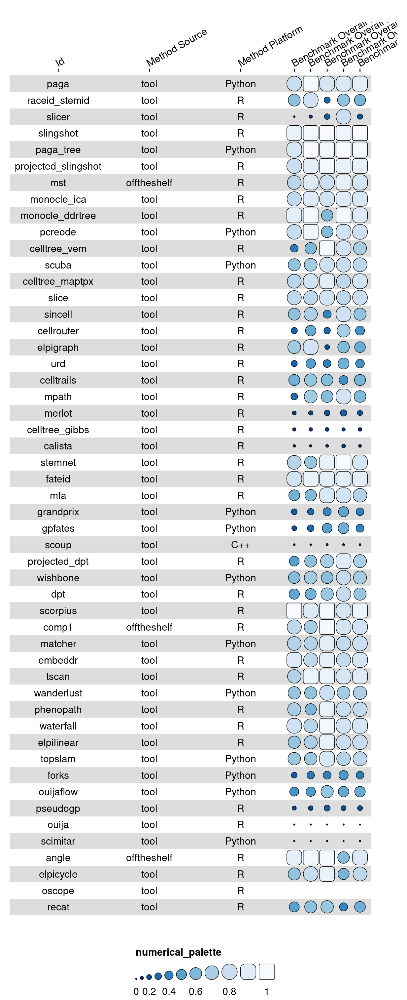
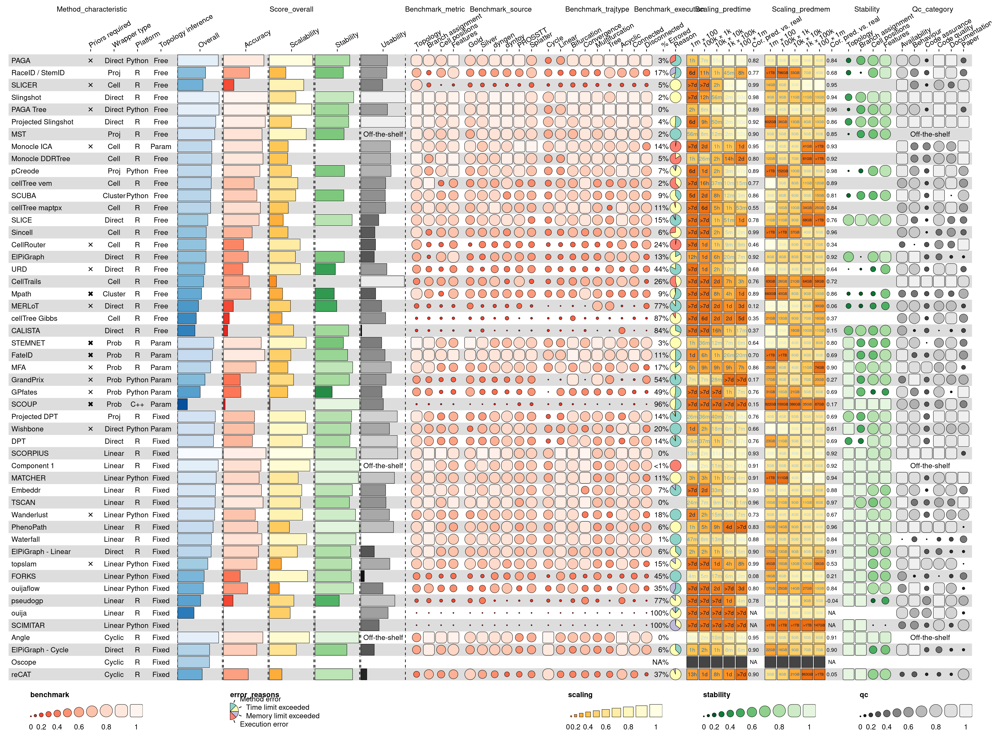
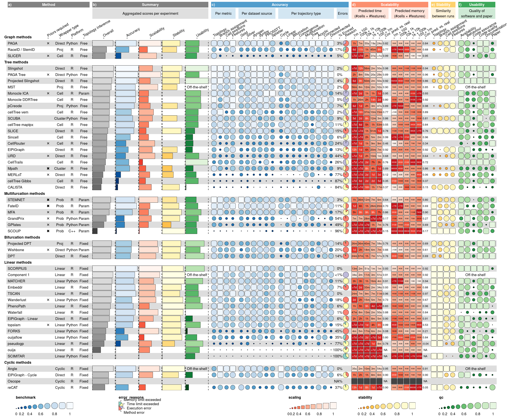

library(funkyheatmap)
library(kableExtra)
data("dynbenchmark_data")Example: dynbenchmark
In this vignette, we will use funkyheatmap to reproduce the figures by Saelens et al. (2019).
Load data
This data was generated by running the data-raw/dynbenchmark_data.R script. It fetches the latest results from the dynbenchmark_results repository and stores the data inside the funkyheatmap package.
Process results
The results data is one big data frame.
data <- dynbenchmark_data$data
print(data[,1:12])# A tibble: 51 × 12
id method_name method_source tool_id method_platform method_url
<chr> <chr> <chr> <chr> <chr> <chr>
1 paga PAGA tool paga Python https://g…
2 raceid_stemid RaceID / S… tool raceid… R https://g…
3 slicer SLICER tool slicer R https://g…
4 slingshot Slingshot tool slings… R https://g…
5 paga_tree PAGA Tree tool paga Python https://g…
6 projected_sling… Projected … tool slings… R https://g…
7 mst MST offtheshelf mst R <NA>
8 monocle_ica Monocle ICA tool monocle R https://g…
9 monocle_ddrtree Monocle DD… tool monocle R https://g…
10 pcreode pCreode tool pcreode Python https://g…
# ℹ 41 more rows
# ℹ 6 more variables: method_license <chr>, method_authors <list>,
# method_description <chr>, wrapper_input_required <list>,
# wrapper_input_optional <list>, wrapper_type <chr>Choose a few columns to preview.
preview_cols <- c(
"id",
"method_source",
"method_platform",
"benchmark_overall_norm_correlation",
"benchmark_overall_norm_featureimp_wcor",
"benchmark_overall_norm_F1_branches",
"benchmark_overall_norm_him",
"benchmark_overall_overall"
)
print(data[,preview_cols])# A tibble: 51 × 8
id method_source method_platform benchmark_overall_norm_co…¹
<chr> <chr> <chr> <dbl>
1 paga tool Python 0.650
2 raceid_stemid tool R 0.539
3 slicer tool R 0.139
4 slingshot tool R 0.740
5 paga_tree tool Python 0.688
6 projected_slingshot tool R 0.655
7 mst offtheshelf R 0.610
8 monocle_ica tool R 0.629
9 monocle_ddrtree tool R 0.731
10 pcreode tool Python 0.646
# ℹ 41 more rows
# ℹ abbreviated name: ¹benchmark_overall_norm_correlation
# ℹ 4 more variables: benchmark_overall_norm_featureimp_wcor <dbl>,
# benchmark_overall_norm_F1_branches <dbl>, benchmark_overall_norm_him <dbl>,
# benchmark_overall_overall <dbl>It’s possible to use funky_heatmap() to visualise the data frame without providing additional metadata, but it will likely not have any of the desired formatting.
g <- funky_heatmap(data[,preview_cols])g
Process column info
Apart from the results themselves, the most important additional info is the column info. This data frame contains information on how each column should be formatted.
column_info <- dynbenchmark_data$column_info
print(column_info)# A tibble: 65 × 6
group id name geom palette options
<chr> <chr> <chr> <chr> <chr> <list>
1 method_characteristic method_name "" text <NA> <named list>
2 method_characteristic method_priors_require… "Pri… text <NA> <named list>
3 method_characteristic method_wrapper_type "Wra… text <NA> <named list>
4 method_characteristic method_platform "Pla… text <NA> <named list>
5 method_characteristic method_topology_infer… "Top… text <NA> <named list>
6 score_overall summary_overall_overa… "Ove… bar overall <named list>
7 score_overall benchmark_overall_ove… "Acc… bar benchm… <named list>
8 score_overall scaling_pred_overall_… "Sca… bar scaling <named list>
9 score_overall stability_overall_ove… "Sta… bar stabil… <named list>
10 score_overall qc_overall_overall "Usa… bar qc <named list>
# ℹ 55 more rowsWith just the data and the column info, we can already get a pretty good funky heatmap:
g <- funky_heatmap(data, column_info = column_info)gWarning: Removed 17 rows containing missing values (`geom_rect()`).
Finetuning the visualisation
The figure can be finetuned by grouping the columns and rows and specifying custom palettes.
Column grouping:
column_groups <- dynbenchmark_data$column_groups
print(column_groups)# A tibble: 10 × 4
Experiment Category group palette
<chr> <chr> <chr> <chr>
1 Method "\n" method_characte… overall
2 Summary "Aggregated scores per experiment" score_overall overall
3 Accuracy "Per metric" benchmark_metric benchm…
4 Accuracy "Per dataset source" benchmark_source benchm…
5 Accuracy "Per trajectory type" benchmark_trajt… benchm…
6 Accuracy "Errors" benchmark_execu… benchm…
7 Scalability "Predicted time\n(#cells × #features)" scaling_predtime scaling
8 Scalability "Predicted memory\n(#cells × #features)" scaling_predmem scaling
9 Stability "Similarity\nbetween runs" stability stabil…
10 Usability "Quality of\nsoftware and paper" qc_category qc Row info:
row_info <- dynbenchmark_data$row_info
print(row_info)# A tibble: 51 × 2
group id
<fct> <chr>
1 graph paga
2 graph raceid_stemid
3 graph slicer
4 tree slingshot
5 tree paga_tree
6 tree projected_slingshot
7 tree mst
8 tree monocle_ica
9 tree monocle_ddrtree
10 tree pcreode
# ℹ 41 more rowsRow grouping:
row_groups <- dynbenchmark_data$row_groups
print(row_groups)# A tibble: 6 × 2
group Group
<fct> <chr>
1 graph Graph methods
2 tree Tree methods
3 multifurcation Multifurcation methods
4 bifurcation Bifurcation methods
5 linear Linear methods
6 cycle Cyclic methods Palettes:
palettes <- dynbenchmark_data$palettes
print(palettes)# A tibble: 7 × 2
palette colours
<chr> <list>
1 overall <chr [101]>
2 benchmark <chr [101]>
3 scaling <chr [101]>
4 stability <chr [101]>
5 qc <chr [101]>
6 error_reasons <chr [4]>
7 white6black4 <chr [10]> Generate funky heatmap
The resulting visualisation contains all of the results by Saelens et al. (2019) in a single plot.
Note that Figures 2 and 3 from the main paper and Supplementary Figure 2 were generated by making different subsets of the column_info and column_groups objects.
g <- funky_heatmap(
data = data,
column_info = column_info,
column_groups = column_groups,
row_info = row_info,
row_groups = row_groups,
palettes = palettes,
col_annot_offset = 3.2
)Warning in funky_heatmap(data = data, column_info = column_info, column_groups
= column_groups, : Argument `col_annot_offset` is deprecated. Use
`position_arguments(col_annot_offset = ...)` instead.gWarning: Removed 17 rows containing missing values (`geom_rect()`).
funkyheatmap automatically recommends a width and height for the generated plot. To save your plot, run:
ggsave("path_to_plot.pdf", g, device = cairo_pdf, width = g$width, height = g$height)References
Saelens, Wouter, Robrecht Cannoodt, Helena Todorov, and Yvan Saeys. 2019. “A Comparison of Single-Cell Trajectory Inference Methods.” Nature Biotechnology 37 (5): 547–54. https://doi.org/10.1038/s41587-019-0071-9.